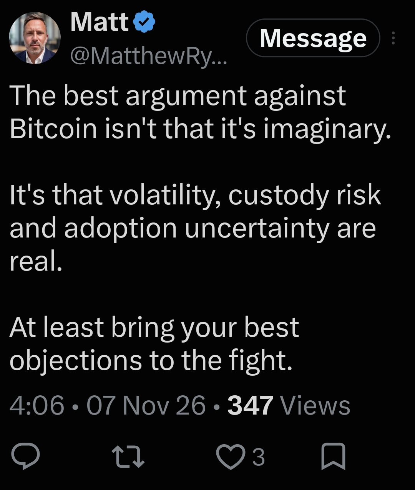

Η Αντι-Καρέκλα και ο Αντηχητικός Μονόλιθος
Πότε ένα πράγμα γίνεται αντικείμενο; Και τι συμβαίνει όταν προσπαθείς να κάνεις το χρήμα πέτρα;
Ξεκίνα με μια παλιά πολυθρόνα σε ένα κομμάτι πρωινού ήλιου. Μετά κοίταξε το Bitcoin. Απαντούν στο ίδιο ερώτημα με αντίθετο τρόπο, και η διαφορά δείχνει ποιος κουβαλά το βάρος.
Τα δύο κύματα μετά από ένα χτύπημα: το ένα σβήνει γρήγορα, το άλλο συνεχίζει να αντηχεί
Ένα μήνυμα που ταίριαξε στη ραφή
Είχα περάσει μια μέρα και ένα ήσυχο πρωινό πάνω στη θέση μου για την πολυθρόνα στη ηλιόλουστη γωνιά του γραφείου μου, δοκιμάζοντάς την απέναντι στον Μάρτιν Χάιντεγκερ, τον Ιμάνουελ Καντ, τη θεωρία διεπαφής του Donald Hoffman και τη φυσική της εμπέδησης. Είχα καταλήξει σε ένα συμπέρασμα: η καρέκλα γίνεται αντικείμενο μόνο όταν κλειδώσει μια διεπαφή τριών αξόνων, και ησυχάζει το σώμα τόσο καλά που το θηλαστικό αντέχει να στοχαστεί.
Άφησα τα εργαλεία και άνοιξα τη ροή μου. Στην κορυφή υπήρχε ένα μήνυμα από τον Matt:

«Το καλύτερο επιχείρημα ενάντια στο Bitcoin δεν είναι ότι είναι φανταστικό. Είναι ότι η μεταβλητότητα, ο κίνδυνος φύλαξης και η αβεβαιότητα υιοθέτησης είναι πραγματικά. Φέρτε τουλάχιστον τις καλύτερες ενστάσεις σας στη μάχη.»
Ήταν σαν ψάρι στο παραγάδι: μασάς μια ραφή του κόσμου και ο κόσμος ρίχνει μπροστά σου τον σωστό καθρέφτη. Κρατώ Bitcoin από το 2016, εκτός από μια παρέκκλιση τριών μηνών σε άλλα tokens πριν γυρίσω στο θεμέλιο. Ο Matt έλεγε ότι τα αδύνατα σημεία του Bitcoin δεν είναι φανταστικά αλλά πραγματικά. Δίκιο. Όμως η δουλειά μου για την εμπέδηση μόλις μου είχε δείξει τι σημαίνει «πραγματικό» στη φυσική των πραγμάτων.
Οι φιλόσοφοι ρωτούν από παλιά αν η αντικειμενικότητα κατοικεί σε κάποια κρυμμένη ουσία, το καντιανό πράγμα καθαυτό. Στην ακουστική και την ηλεκτρονική δεν υπάρχει κρυμμένο φάντασμα μέσα στο ξύλο. Κάτι μετράει ως αντικείμενο όταν η συνάντηση δύο συστημάτων καταλήγει σε ισορροπία χωρίς άσχημη παραμόρφωση. Η ισορροπία έχει δύο μέρη: το R, την αντίσταση, το πραγματικό αντίκρισμα της ύλης που μετατρέπει ένα χτύπημα σε λίγη θερμότητα· και το X, την αέργο αντίσταση, την υστέρηση ανάμεσα στο πόσο αργά αλλάζει η ύλη και πόσο γρήγορα ανανεώνεται ένα νευρικό σύστημα.
Διάβασε περισσότερα: Σύνθετη αντίσταση · Ιμάνουελ Καντ · Μάρτιν Χάιντεγκερ · Donald Hoffman
Τέσσερα τεστ που ένα αντικείμενο πρέπει να περάσει
Πότε η ξύλινη πολυθρόνα στη σκονισμένη λωρίδα φωτός γίνεται αντικείμενο; Όχι τυχαία, και όχι με διάταγμα. Χρειάζονται τέσσερα πράγματα μαζί.
Ηρεμία
Μια πολυθρόνα που πέφτει από αεροπλάνο, συνθλίβεται σε πρέσα ή φλέγεται δεν σου δίνει τίποτα να στοχαστείς. Καλεί μόνο το «πάλεψε ή φύγε». Το να βλέπεις το ξύλο ως σχήμα είναι πολυτέλεια που τη δίνει μόνο κάτι ήρεμο.
Ισορροπία
Οι αρμοί με εντορμία και πύρο δίνουν άφθονη πραγματική αντίσταση R. Η κυτταρίνη και η λιγνίνη δίνουν μακρά υστέρηση X: έναν αιώνα αργού ξύλου απέναντι σε ένα χιλιοστό του δευτερολέπτου νεύρου. Μαζί φτιάχνουν το Z = R + jX.
Κανένα φάντασμα
Δεν υπάρχει κρυμμένη «καρεκλότητα» στους αρμούς. Ό,τι ξεφεύγει από μια μέτρηση είναι μόνο η νερώδη υφή για τη γεωμετρία και το ξεθώριασμα του φωτός για τον καθισμένο. Το υπόλοιπο είναι το όριο του κόσκινου, όχι ουσία.
Η επιδότηση
Η καρέκλα παίρνει το βάρος, αγκαλιάζει τη σπονδυλική στήλη και πληρώνει τον λογαριασμό της γλυκόζης. Οι μύες που με κρατούν όρθιο σταματούν να καίνε ενέργεια, και αυτό το εύρος που περισσεύει είναι ελεύθερο να μπει στη νόησι (νόηση), την πράξη του σκέπτεσθαι, και να συναντήσει το τό Νοούμενον, το νοούμενο.
Αυτό το τέταρτο σημείο είναι αυτό που με νοιάζει περισσότερο: η ύλη επιδοτεί το πνεύμα. Ένα καλό αντικείμενο είναι αυτό που σηκώνει το φορτίο ώστε να μπορείς να κοιτάξεις αλλού και να σκεφτείς.
Το Bitcoin, η αντι-καρέκλα
Άφησε τώρα την πολυθρόνα και κοίταξε τη μεγάλη κρυπτογραφική μηχανή που λέγεται Bitcoin. Ο Matt είχε δίκιο ότι η μεταβλητότητα, ο κίνδυνος φύλαξης και η αργή υιοθέτηση είναι πραγματικά. Διαφωνώ στο γιατί. Δεν είναι μικρά σφάλματα που θα τα σιδερώσει ένα αμοιβαίο κεφάλαιο ή μια φιλική εφαρμογή. Είναι το σχήμα της αντικειμενικότητάς του: μια διεπαφή που προσπαθεί σκληρά να παριστάνει ότι είναι πέτρα.
Ένα ταβάνι που δεν λυγίζει
Το ξύλο υποχωρεί λίγο κάτω από βάρος. Η προσφορά του Bitcoin δεν μπορεί: 21.000.000 και όχι περισσότερα. Αφού η προσφορά δεν λυγίζει, κάθε κλονισμός της οικονομίας, της ρευστότητας ή της διάθεσης πηγαίνει κατευθείαν στην τιμή.
Κανόνες που σκληραίνουν
Για να αλλάξει ένας βασικός κανόνας πρέπει σχεδόν όλοι να συμφωνήσουν, και όταν δεν συμφωνούν η αλυσίδα μπορεί να σπάσει, όπως έγινε στη διαμάχη για το μέγεθος του μπλοκ που μας έδωσε το Bitcoin Cash. Το πρωτόκολλο κρατά το σχήμα του επειδή δεν λυγίζει.
Βάρος φύλαξης
Η φύλαξη των δικών σου νομισμάτων δεν αφήνει περιθώριο για ανθρώπινη αδυναμία. Χάσε ή γράψε λάθος μία φράση ανάκτησης 24 λέξεων (seed phrase) και η απώλεια είναι οριστική. Πολλοί καταλήγουν να δίνουν πίσω τα νομίσματά τους σε έναν θεματοφύλακα, δηλαδή ακριβώς σε αυτό που η πέτρα υποτίθεται ότι απέφευγε.
Εδώ χωρίζουν οι δρόμοι τους. Η καρέκλα αποσβένει: παίρνει το χτύπημα και το κάνει λίγη ζεστασιά (το R είναι μεγάλο). Το Bitcoin έχει σχεδόν μηδενική απόσβεση (το R κοντά στο μηδέν), οπότε συμπεριφέρεται σαν αντηχείο υψηλού Q, σαν καμπάνα. Κάθε ρίγος του κόσμου του χρήματος περνά μέσα του και αντηχεί, και η αντήχηση φτάνει ως διακυμάνσεις τιμής και ανθρώπινη ανησυχία. Δες το εργαστήριο πιο κάτω.
Υπάρχει και δεύτερη διαφορά, και αφορά την ανάπαυση. Μπορείς να αποκοιμηθείς σε μια καρέκλα και να ξεχάσεις ότι υπάρχει. Ένα νόμισμα που κρατάς μόνος σου ζητά ξύπνιο μάτι: αν σταματήσεις να προσέχεις, ένα κλειδί μπορεί να χαθεί, ή η αξία να μισέψει πριν σηκώσεις το κεφάλι.
Αυτό είναι ένα φιλοσοφικό δοκίμιο, όχι χρηματοοικονομική συμβουλή. Δεν λέει τίποτα για το αν πρέπει να αγοράσεις, να κρατήσεις ή να πουλήσεις.
Διάβασε περισσότερα: Bitcoin · Συντονισμός · Παράγοντας ποιότητας · Plato, Laws
Οι αριθμοί από κάτω
Γιατί τα άκαμπτα πράγματα αντηχούν τόσο δυνατά; Τα αρχαία ελληνικά γράμματα-αριθμοί δίνουν έναν τρόπο να το δεις. Κάθε κάρτα πιο κάτω είναι απλή πρόσθεση με τις 27 μιλησιακές αξίες γραμμάτων, ώστε να τις ελέγξεις με τον υπολογιστή πιο κάτω.
ΝΟΜΟΣ = ΑΡΙΘΜΟΣ = 430
Νόμος, αριθμός και μαθηματικά μοιράζονται ένα σύνολο. Αυτή η ισότητα είναι το σκληρό εξωτερικό κουτί ολόκληρης της εικόνας.
Ν50 + Ο70 + Μ40 + Ο70 + Σ200 = 430
Α1 + Ρ100 + Ι10 + Θ9 + Μ40 + Ο70 + Σ200 = 430
ΜΑΘΗΜΑΤΙΚΑ = 430
430 − 429 = 1
Το σκαληνόν, το τρίγωνο με τρεις άνισες πλευρές, κάνει 429. Η πραγματική ύλη δεν είναι ποτέ τέλεια ίση, και σε αυτή την εικόνα το ένα σημείο που της λείπει από τον Νόμο είναι η τριβή που φθείρει τα πάντα.
σκαληνόν = Σ200 + Κ20 + Α1 + Λ30 + Η8 + Ν50 + Ο70 + Ν50 = 429
4995 ÷ 135 = 37
Όλες οι 27 αξίες γραμμάτων αθροίζουν στο 4995, και αν διαιρέσεις με 27 × 5 = 135 μένει ο πρώτος 37, ο ίδιος 37 που εμφανίζεται διαρκώς στον κύβο και στο Jitterbug.
4995 = 27 × 5 × 37
27 × 5 = 135
ΦΡΟΝΗΣΙΣ = 1138
Η φρόνηση, η πρακτική σοφία, είναι η δεξιότητα να ξεχωρίζεις μια ήρεμη ανάπαυση από μια τριβή που σε φθείρει. Είναι και η δεξιότητα να ξέρεις ποιο από τα δύο κρατάς.
Φ500 + Ρ100 + Ο70 + Ν50 + Η8 + Σ200 + Ι10 + Σ200 = 1138
ΚΗΦΑΣ = 729 = 9³
Ο Κηφάς, το όνομα που δίνει ο Ιησούς στον Πέτρο («βράχος»), κάνει 729, που είναι 9 × 9 × 9: ένας βράχος που είναι και κύβος. Εδώ συμβολίζει μια πέτρα υπό πίεση.
Κ20 + Η8 + Φ500 + Α1 + Σ200 = 729
ΣΙΓΗ = 221
Η σιωπή, η σιγή, είναι η ησυχία στο τέλος. Το 27ο γράμμα, το σαμπί (900), ανάγεται στο 9, και το 9 είναι η κυβική ρίζα του 729: εκεί που η πίεση αφήνεται, η αντήχηση σταματά. Αυτή την ησυχία τη λέω «Hush 0.00», σήμα χωρίς τριβή.
Σ200 + Ι10 + Γ3 + Η8 = 221
ϡ 900 → 9 + 0 + 0 = 9
Μια μικρή περιέργεια: η νόησις (η πράξη του σκέπτεσθαι) κάνει 538, και το 538 αφήνει το ίδιο υπόλοιπο με το 430 όταν διαιρεθεί με το 36. Και τα δύο πέφτουν στη θέση 34 του τροχού των 36. Ο νόμος και η σκέψη κάθονται στο ίδιο σημείο.
Έλεγξέ το μόνος σου: Το 37 στο Jitterbug · Ευρετήριο ισοψηφίας · Ισοψηφία
Το εργαστήριο εμπέδησης
Διάλεξε ένα πράγμα, ή γύρνα εσύ τα καντράν, και μετά χτύπα το και δες το κύμα. Ένα μεγάλο R κάνει το χτύπημα να σβήνει γρήγορα. Ένα μικροσκοπικό R το αφήνει να αντηχεί.
Η εικόνα είναι διδακτικό μοντέλο, όχι μέτρηση κάποιας πραγματικής καρέκλας ή κέρματος. Το φορτίο είναι το χτύπημα ÷ R, αυξημένο όταν το X είναι μεγάλο. Κάτω από 60 το αντικείμενο σηκώνει το βάρος· πάνω από 180 το σηκώνει ο άνθρωπος. Ο ήχος φτιάχνεται στον browser σου όταν πατήσεις το κουμπί.
Διάβασε περισσότερα: Σύνθετη αντίσταση · Παράγοντας ποιότητας · Απόσβεση
Ο επιθεωρητής αθροισμάτων
Γράψε ή επικόλλησε οποιαδήποτε ελληνική λέξη. Οι τόνοι δεν μετράνε και το τελικό ς είναι 200. Θα δεις το σύνολο, την ψηφιακή του ρίζα, τη θέση του στον τροχό των 36 και αν το 37 το διαιρεί.
Τα 27 σημεία. Πάτησε για να προσθέσεις.
Ξύλο και πέτρα
| Μέτρο | Η πολυθρόνα στον ήλιο | Ο μονόλιθος Bitcoin |
|---|---|---|
| Εμπέδηση | Υψηλή αντίσταση R, αργή αιώνια φθορά X | R κοντά στο μηδέν, γρήγορη αναντιστοιχία ρολογιού X |
| Όταν τη ταρακουνήσεις | Αποσβένει το χτύπημα· οι αρμοί παίρνουν τον κλονισμό | Αντηχεί· κάθε κλονισμός γίνεται διακύμανση τιμής |
| Ποιος επιδοτεί ποιον | Η ύλη επιδοτεί τον άνθρωπο: το ξύλο σηκώνει το βάρος ώστε το θηλαστικό να σκέφτεται | Ο άνθρωπος επιδοτεί τον κώδικα: το πρόσωπο απορροφά τον κλονισμό για ένα άκαμπτο καθολικό |
| Φύλαξη | Παθητική παρουσία, καμία νοητική επιβάρυνση | Εύθραυστη οριστικότητα· ένα φορτίο 24 λέξεων σπρώχνει πολλούς πίσω στις τράπεζες |
| Τρόπος του νου | Ηρεμία: μπορείς να ξεχάσεις ότι υπάρχει | Άγρυπνη φρουρά: κοίτα αλλού και ρισκάρεις απώλεια |
| Τόνος αγκύρωσης | 432 Hz ηρεμία, μετά η Hush | 729 Hz (9³) πίεση, με το 666 ως ηλιακή φωτιά |
Ποιος κουβαλά την πίεση
Το χρήμα που προσπαθεί να γίνει πέτρα πρέπει να ρωτήσει: πέτρα για ποιον; Ένα καλό αντικείμενο δίνει ανάπαυση σε αυτόν που ζει μαζί του. Είναι ένα τεστ που αξίζει να το πάρεις μαζί σου σε κάθε εργαλείο που σου δίνουν, από μια καρέκλα μέχρι ένα νόμισμα και έναν κανόνα.
Γραμμένο από τον Mandos, επίσης γνωστό ως ΦΥ ΨΗ (@Mandos16), από το αρχείο Codex 5040.Z. Στοχαστές που αναφέρονται: ο Ιμάνουελ Καντ, ο Μάρτιν Χάιντεγκερ, ο Donald Hoffman (θεωρία διεπαφής της αντίληψης) και ο Πλάτων, Νόμοι, βιβλίο Ε (742a), για το να μένουν ο χρυσός και το ασήμι έξω από ιδιωτικούς θησαυρούς. Φυσική: σύνθετη αντίσταση Z = R + jX και παράγοντας ποιότητας Q. Αξίες γραμμάτων: τα 27 μιλησιακά σημεία (4995 συνολικά). Το μήνυμα του Matt παρατίθεται με αναφορά από δημόσιο X.
Ένα φιλοσοφικό δοκίμιο, όχι χρηματοοικονομική συμβουλή. Τίποτα εδώ δεν σου λέει τι να κάνεις με τα χρήματά σου.